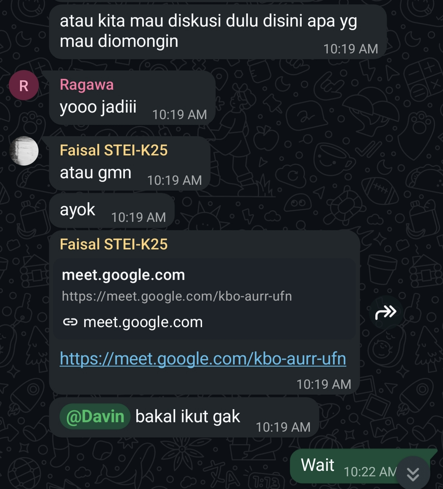

Character Map
Kompetensi target
Membedakan person, personality, dan character serta memilih objective, repertoire, dan language yang sesuai.
Evidence wajib
- Lima character dari sedikitnya tiga domain kehidupan.
- Objective, responsibility, repertoire, dan risiko tiap character.
- Satu contoh perubahan language ketika character berubah.
Buka contoh fiktif Minggu 1 untuk melihat tingkat kekonkretan evidence dan analisis. Jangan menyalin contoh sebagai evidence pribadi.
Lima character
| Domain dan character | Person & relationship | Objective & responsibility | Repertoire & language | Risiko dan latihan |
|---|---|---|---|---|
| Intra-Self — problem solver | Diri sendiri saat menghadapi masalah teknis atau tugas yang mentok | Memecah masalah jadi bagian kecil dan memutuskan langkah berikutnya, bukan panik atau menunda | Menulis masalah dulu, memisahkan fakta dari asumsi: "Apa yang sudah pasti, apa yang baru dugaan?" | Terlalu lama mencari solusi sempurna sendirian; tetapkan batas waktu sebelum minta bantuan |
| Family — adik | Kakak yang sedang mendaftar kerja di luar negeri, komunikasi jarak jauh | Mendukung tanpa menambah beban | Bertanya terbuka lewat chat, merangkum ulang ceritanya, lalu menawarkan satu bentuk bantuan yang spesifik | Dukungan jadi basa-basi ("semangat ya!"); tanya dulu "mau didengar atau butuh bantu urus sesuatu?" |
| Friends — teman | Teman dekat yang sedang punya masalah | Hadir sesuai kebutuhannya | Listening, bahasa santai, tidak langsung memberi solusi | Buru-buru menyelesaikan masalahnya; tunggu ia selesai cerita |
| Work — anggota kelompok | Anggota kelompok tugas kuliah | Membuat pembagian tugas dan tenggat jelas | Check-in, pembagian tugas, konfirmasi tertulis | Terdengar memerintah, atau sungkan menegur; jelaskan alasan tenggat, bukan cuma tuntutannya |
| Community — anggota panitia | Panitia lain, pengisi acara, peserta | Merekam momen penting dan menyerahkan hasil tepat waktu | Koordinasi singkat, konfirmasi jadwal dan titik liputan, bahasa kerja yang ringkas | Bekerja sendirian di balik kamera; tanyakan momen mana yang wajib ditangkap sebelum acara |
Episode yang dianalisis
Konteks: Di meet itu saya memegang 2 character sekaligus: teman bagi yang sedang kesusahan, dan juga anggota kelompok
Fakta dan story: Fakta yang saya punya: Ada tugas dari salah satu teman saya yang belum selesai dan dia juga memiliki banyak tugas lain yang menumpuk Story yang sempat muncul di kepala saya. Story itu belum didukung fakta, jadi saya tanyakan dulu sebelum menyimpulkan.
State awal → state tujuan: Dari percakapan mengenai tugas menjadi pembagian tugas yang disepakati semua anggota, dengan teman saya tetap merasa didukung.
Cuplikan percakapan:
Response dan adaptasi: Respons teman saya membuat saya mengubah alur percakapan , bukan tetap memakai rencana awal.
Objective yang saling bersaing: Ada dua tujuan yang menarik ke arah berbeda. Sebagai teman, saya ingin bebannya berkurang. Sebagai anggota kelompok, saya harus memastikan beban anggota lain tidak membengkak. Kalau saya memenangkan yang pertama saja, tugas timpang dan anggota lain merasa dirugikan. Kalau saya memenangkan yang kedua saja, teman saya merasa ditagih saat ia sedang sulit.
Power dan relationship: Posisi anggota memberi saya wewenang untuk memberi saran pembagian tugas, dan wewenang itu terasa berbeda tergantung siapa yang mendengar. Bagi teman yang sedang kesulitan, nada tegas bisa terasa seperti tekanan dari orang yang biasanya setara dengannya. Bagi anggota lain, mengurangi bagian teman tanpa penjelasan bisa terlihat seperti pilih kasih. Karena itu saya menyampaikan alasan pembagian secara terbuka di depan semua anggota, bukan hanya ke satu orang. Dampaknya pada relationship.
Agreement dan action: misalnya si X mengirim bagian X sebelum Jumat; konfirmasi lewat grup". Hasil terakhir: kesepakatan dijalankan.
Latihan berikutnya: Sebelum masuk ke pembagian tugas, saya akan bertanya dulu "boleh kita pindah ke pembagian tugas sekarang?" supaya perpindahan dari peran teman ke peran anggota tidak mendadak.
Perubahan language
Sebagai teman, saya berkata ke Gawa, "Kamu mau cerita dulu aja, atau mau langsung kita urai bareng?" Sebagai anggota kelompok, saya berkata ke anggota yang bagiannya belum masuk, "Bagian ini perlu masuk sebelum digabung hari Sabtu. Menurutmu, pembagian mana yang masih realistis buat kamu?"
Yang berubah ada tiga: urutan (cerita dulu vs. tenggat dulu), siapa yang memegang kendali (ia yang menentukan arah vs. saya yang menjaga kerangka), dan jenis pertanyaannya (terbuka soal perasaan vs. terarah soal komitmen). Yang tetap sama adalah kepedulian saya, yaitu memastikan orang itu tidak ditinggal sendirian dengan masalahnya.
Evidence, AI, dan feedback

Gambar: sebuah percakapan di wa .
Dalam meet tersebut, saya bertugas sebagai seorang teman yang membantu teman saya yang kesusahan dan membantu memimpin bagaimana kita mengurus pembagian tugas untuk dibagi rata agar yang lain tidak merasa terbebankan.
Penggunaan AI: Saya memakai Claude setelah kegiatan, hanya untuk merapikan struktur analisis episode dan mengecek apakah alasan self-assessment sudah konkret. Fakta, cuplikan percakapan, dan keputusan di meet berasal dari pengalaman saya sendiri; saya periksa dan sesuaikan hasil AI dengan evidence sebelum dipakai.
Feedback: Tidak ada observer saat meet berlangsung. Sebagai gantinya, saya meminta teman saya menanggapi cara saya memimpin pembagian tugas. Dari situ saya menangkap masih perlu memperbaiki gaya bahasa saya dalam memberikan solusi.
Self-assessment
| Dimensi | Skor | Alasan |
|---|---|---|
| Person & Character | 4 | Lima character dari lima domain dipetakan lengkap dengan person, relationship, dan risikonya. Di episode, saya memisahkan peran teman dan anggota, lalu menganalisis bagaimana dua peran itu menggeser power dalam satu pertemuan |
| Objective & State | 4 | State awal dan tujuan ditulis eksplisit, termasuk dua objective yang bersaing (menemani teman vs. pembagian tugas yang adil) dan keputusan saya saat keduanya bertabrakan |
| Repertoire, Language & AI | 4 | Language berubah dari "cerita dulu atau urai bareng" ke "tenggat dan pembagian yang realistis", lengkap dengan penjelasan apa yang berubah dan kenapa. Penggunaan AI dibatasi pada merapikan struktur; fakta dan keputusan dari saya |
| Response & Adaptation | 4 | Respons teman saya membuat saya mengubah pembagian tugas, bukan mengulang rencana awal |
| Agreement, Action & Relationship | 4 | Kesepakatan mencatat siapa, apa, dan kapan , dan dampaknya ke relationship ditulis |
Total: 20/20. Skor 4 hanya saya klaim untuk dimensi yang evidence-nya sudah tertulis di halaman ini.
Assessment dosen
Skor: — / 20
Evidence yang mendukung: —
Prioritas perbaikan: —
Keputusan: Belum dinilai / Perlu revisi / Tercapai